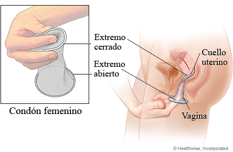
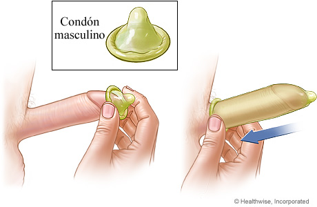
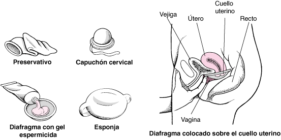
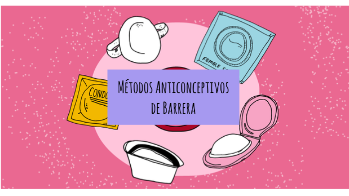

¿CÓMO FUNCIONAN LOS ANTICONCEPTIVOS DE BARRERA?
Los anticonceptivos de barrera impiden la entrada de los espermatozoides en el útero de la mujer. Pertenecen a este grupo el preservativo o condón, el diafragma, el capuchón cervical y la esponja anticonceptiva. Algunos preservativos contienen espermicidas. Estas sustancias deben usarse conjuntamente con los preservativos y con otros tipos de anticonceptivos de barrera que no los contengan.

Los anticonceptivos de barrera obstruyen físicamente el acceso de los espermatozoides al útero. Incluyen preservativos, diafragmas, capuchones cervicales, geles anticonceptivos, esponjas anticonceptivas y espermicidas (espumas, cremas y supositorios). Estos anticonceptivos deben ser utilizados por la mujer o su pareja cada vez que mantienen relaciones sexuales.
¿CUÁLES SON LOS MÉTODOS DE ANTICONCEPTIVOS DE BARRERA PRINCIPALES?
Preservativos (condones):
Los preservativos son vainas finas que recubren el pene. Los que están hechos de látex son los únicos anticonceptivos que ofrecen protección frente a todas las infecciones habituales de transmisión sexual (ETS), tanto las ocasionadas por una bacteria (como la gonorrea y la sífilis) como las causadas por un virus (como el VPH, el virus del papiloma humano o el VIH o virus de la inmunodeficiencia humana). Los preservativos fabricados con un material sintético como el poliuretano, el poliisopreno o la goma de silicona brindan cierta protección, pero son más finos y se rompen con más facilidad. Los fabricados a partir de piel de oveja no protegen de infecciones víricas como el VIH.
Los preservativos deben usarse correctamente para que sean eficaces. Se deben colocar antes de la penetración. El uso correcto de un dispositivo externo (colocado sobre el pene) implica lo siguiente:
-Utilice un preservativo nuevo en cada relación sexual.
-Use un preservativo del tamaño adecuado.
-Maneje cuidadosamente el preservativo para evitar dañarlo con las uñas, con los dientes o con otros objetos puntiagudos.
-Póngase el preservativo después de la erección del pene y antes de cualquier contacto genital con la pareja.
-Determine en qué sentido está enrollado el preservativo, colocándolo en el dedo índice y tratando suavemente de desenrollarlo, pero sólo un poco. Si se resiste, dele la vuelta y desenróllelo en el otro sentido. Luego vuélvalo a enrollar.
-Coloque el preservativo enrollado sobre la punta del pene erecto.
-Procure dejar 1,5 cm en la punta del preservativo para recolectar el semen.
-Con una mano, apriete el extremo del preservativo para vaciar el aire que contiene.
-Si no está circuncidado, tire del prepucio hacia atrás antes de desenrollar el preservativo.
-Con la otra mano, deslice el preservativo sobre el pene hasta su base y aplane cualquier burbuja de aire.
-Asegúrese de que la lubricación durante el coito es apropiada.
-Con los preservativos de látex, use únicamente lubricantes a base de agua. Los lubricantes a base de aceite (como la vaselina, la manteca, el aceite mineral, los aceites de masaje, las lociones corporales y el aceite de cocina) pueden debilitar el látex y provocar la rotura del preservativo.
-Sostenga el preservativo firmemente contra la base del pene durante la retirada para evitar salpicar semen.
Esponja anticonceptiva:

También se puede tomar estrógeno y progestágeno a través de anticonceptivos hormonales en forma de parche cutáneo adhesivo y como un anillo vaginal.
La esponja anticonceptiva consiste en una esponja de poliuretano, redonda, con forma de almohada, de aproximadamente 4 cm de diámetro. Se humedece en agua, doblada, y se inserta en la parte más profunda de la vagina, donde bloquea la entrada de los espermatozoides al útero. También está impregnada de espermicida. Se puede adquirir sin receta médica y no es necesario que la ajuste un profesional de la salud.
Se puede insertar en la vagina hasta 24 horas antes del acto sexual y proporciona protección durante todo el tiempo, independientemente de la frecuencia con que se repita el coito. Debe dejarse en su lugar durante al menos 6 horas después del último coito, pero no más de 30 horas. Por lo general, ninguno de los dos miembros de la pareja es consciente de su presencia una vez que se inserta.
La esponja es menos eficaz que el diafragma. Los índices de embarazo cuando el uso es el habitual son del 12% si no se han tenido hijos y del 24% si se tienen hijos.
No suelen producirse problemas relacionados con su uso. En caso de que ocurran, consisten en reacciones alérgicas, irritación o sequedad vaginal y dificultad para retirar la esponja.
Espermicidas:
Los espermicidas son preparaciones que destruyen los espermatozoides por contacto. Están disponibles en forma de espumas, cremas, geles o gelatinas y supositorios vaginales, y se aplican en la vagina antes del coito. Estos anticonceptivos proporcionan una barrera química a los espermatozoides, ya que los atrapan y los dañan. Por lo tanto, evitan que los espermatozoides fertilicen un óvulo.
La mayoría de los tipos de espermicidas son igualmente eficaces. Cerca del 19% de las mujeres que utilizan los espermicidas siguiendo fielmente las instrucciones (uso perfecto) se quedan embarazadas durante el primer año de su uso. Con el gel anticonceptivo, alrededor del 7% de las mujeres que los usan siguiendo fielmente las instrucciones se quedan embarazadas y alrededor del 14% de las que los usan como la mayoría de la gente (uso habitual) se quedan embarazadas.
La eficacia de los espermicidas es limitada, por tanto son más eficaces cuando se usan en combinación con otro anticonceptivo de barrera, como un preservativo o un diafragma.
Los espermicidas deben colocarse en la vagina por lo menos 10 a 30 minutos y, generalmente, no más de 1 hora antes de la relación sexual. Se deben volver a aplicar cada vez que una pareja mantiene relaciones sexuales.
El uso de espermicidas varias veces al día puede irritar la vagina y dañar los tejidos que la recubren. Como consecuencia, los microorganismos que causan las infecciones de transmisión sexual (incluido el VIH) pueden entrar en el organismo con más facilidad y provocar una enfermedad. Los espermicidas no protegen contra las infecciones de transmisión sexual.
El primer preservativo de la historia.